Secure Programs
Security implies some degree of trust that the program enforces expected confidentiality, integrity, and availability
An assessment of security can also be influenced by someone's general perspective on software quality
E.g., if your manager's idea of quality is conformance to specifications, then she might consider the code secure if it meets security requirements, whether or not the requirements are complete or correct.
3
IEEE Terminology for Quality
A bug can be a mistake in interpreting a requirement, a syntax error in a piece of code, or the (as-yet-unknown) cause of a system crash.
When a human makes a mistake, called an error, in performing some software activity, the error may lead to a fault, or an incorrect step, command, process, or data definition in a computer program.
A failure is a departure from the system's required behavior.
a fault is an inside view of the system, as seen by the eyes of the developers, whereas a failure is an outside view: a problem that the user sees. 4
Fixing Faults
A module in which 100 faults were discovered and fixed is better than another in which only 20 faults were discovered and fixed, suggesting that more rigorous analysis and testing had led to the finding of the larger number of faults (?)
Early work in computer security was based on the paradigm of "penetrate and patch," in which analysts searched for and repaired faults.
5
Fixing Faults (Cont’d)
However, the patch efforts were largely useless, making the system less secure rather than more secure because they frequently introduced new faults.
The pressure to repair a specific problem encouraged a narrow focus on the fault itself and not on its context.
The fault often had nonobvious side effects in places other than the immediate area of the fault.
Fixing one problem often caused a failure somewhere else
The fault could not be fixed properly because system functionality or performance would suffer as a consequence
6
Unexpected Behavior
To understand program security, we can examine programs to see whether they behave as their designers intended or users expected.
Such unexpected behavior a program security flaw; it is inappropriate program behavior caused by a program vulnerability.
Program security flaws can derive from any kind of software fault
Divide program flaws into two separate logical categories: inadvertent human errors versus malicious, intentionally induced flaws.
7
Regrettably, we do not have techniques to eliminate or address all program security flaws.
Security is fundamentally hard, security often conflicts with usefulness and performance, there is no ""silver bullet" to achieve security effortlessly, and false security solutions impede real progress toward more secure programming
8
There are two reasons for this distressing situation.
Program controls apply at the level of the individual program and programmer.
Programming and software engineering techniques change and evolve far more rapidly than do computer security techniques.
9
Types of Flaws
validation error (incomplete or inconsistent): permission checks
domain error: controlled access to data
serialization and aliasing: program flow order
inadequate identification and authentication: basis for authorization
boundary condition violation: failure on first or last case
other exploitable logic errors
10
Nonmalicious Program Errors
Buffer Overflows
A buffer (or array or string) is a space in which data can be held.
A buffer's capacity is finite.
11
Suppose a C language program contains the declaration:
char sample[10];
Now we execute the statement:
sample[10] = 'B';
However, if the statement were
sample[i] = 'B';
we could not identify the problem until i was set during execution to a too-big subscript.
12
Suppose each of the ten elements of the array sample is filled with the letter A and the erroneous reference uses the letter B, as follows:
for (i=0; i<=9; i++)
sample[i] = 'A';
sample[10] = 'B‘;
13
14
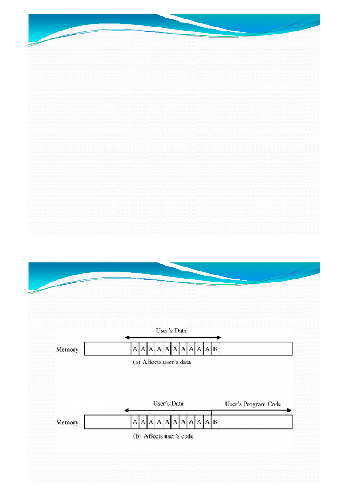
15
Security Implication
Two buffer overflow attacks that are used frequently
The attacker may replace code in the system space. By replacing a few instructions right after returning from his or her own procedure, the attacker regains control from the operating system, possibly with raised privileges.
On the other hand, the attacker may make use of the stack pointer or the return register. Subprocedure calls are handled with a stack, a data structure in which the most recent item inserted is the next one removed (last arrived, first served).
16
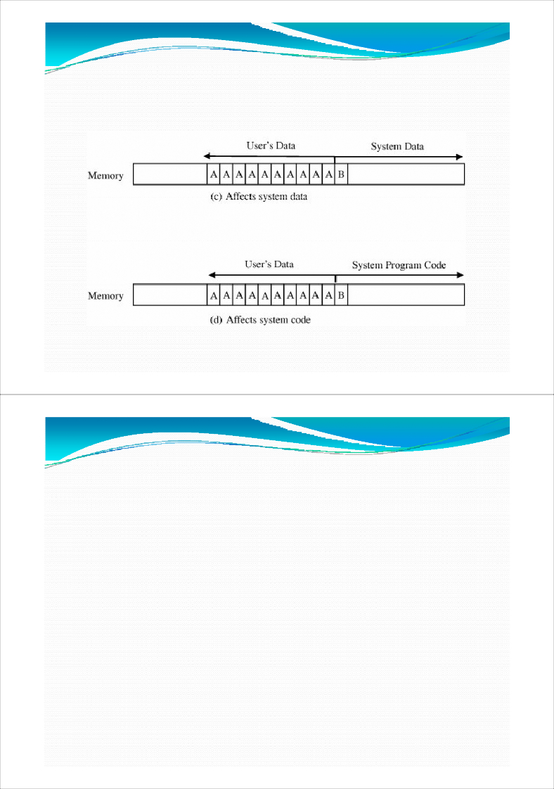
An alternative style of buffer overflow occurs when parameter values are passed into a routine, especially when the parameters are passed to a web server on the Internet. Parameters are passed in the URL line, with a syntax similar to
http://www.somesite.com/subpage/userinput.asp? parm1=(808)555-1212 &parm2=2009Jan17
The attacker might question what the server would do with a really long telephone number, say, one with 500 or 1000 digits.
17
Incomplete Mediation
Consider the example
http://www.somesite.com/subpage/userinput.asp? parm1=(808)555-1212 &parm2=2009Jan17
What would happen if parm2 were submitted as 1800Jan01? Or 1800Feb30? Or 2048Min32? Or 1Aardvark2Many?
18
Security Implication
Consider this example
http://www.things.com/order.asp?custID=101&part=555A&q y=20&price =10&ship=boat&shipcost=5&total=205
A malicious attacker may decide to exploit this peculiarity by supplying instead the following URL, where the price has been reduced from $205 to $25:
http://www.things.com/order.asp?custID=101&part=555A&q y=20&price =1&ship=boat&shipcost=5&total=25
19
Time-of-Check to Time-of-Use Errors
The time-of-check to time-of-use (TOCTTOU) flaw concerns mediation that is performed with a "bait and switch" in the middle. It is also known as a serialization or synchronization flaw.
20
Time-of-Check to Time-of-Use Errors (Cont’d)
Suppose a request to access a file were presented as a data structure, with the name of the file and the mode of access presented in the structure.
To carry out this authorization sequence, the access control mediator would have to look up the file name in tables. The mediator could compare the names in the table to the file name in the data structure to determine whether access is appropriate. More likely, the mediator would copy the file name into its own local storage area and compare from there
21
Time-of-Check to Time-of-Use Errors (Cont’d)
While the mediator is checking access rights for the file my_file, the user could change the file name descriptor to your_file
The problem is called a time-of-check to time-of-use flaw because it exploits the delay between the two times. That is, between the time the access was checked and the time the result of the check was used, a change occurred, invalidating the result of the check.
22
Security Implication
Pretty clear
Checking one action and performing another is an example of ineffective access control
There are ways to prevent exploitation of the time lag.
One way is to ensure that critical parameters are not exposed during any loss of control.
Another way is to ensure serial integrity; that is, to allow no interruption (loss of control) during the validation.
23
Viruses and Other Malicious Code
Malicious Code Can Do Much (Harm)
Malicious code runs under the user's authority.
Thus, malicious code can touch everything the user can touch, and in the same ways.
Users typically have complete control over their own program code and data files; they can read, write, modify, append, and even delete them.
But malicious code can do the same, without the user's permission or even knowledge.
24
Number of malware signatures
1800000
1600000
1400000
1200000
1000000
800000
600000
400000
200000
0
2002 2003 2004 2005 2006 2007 2008
Symantec report 2009
25
Almost 30 years of Malware
26
From Malware fighting malicious code
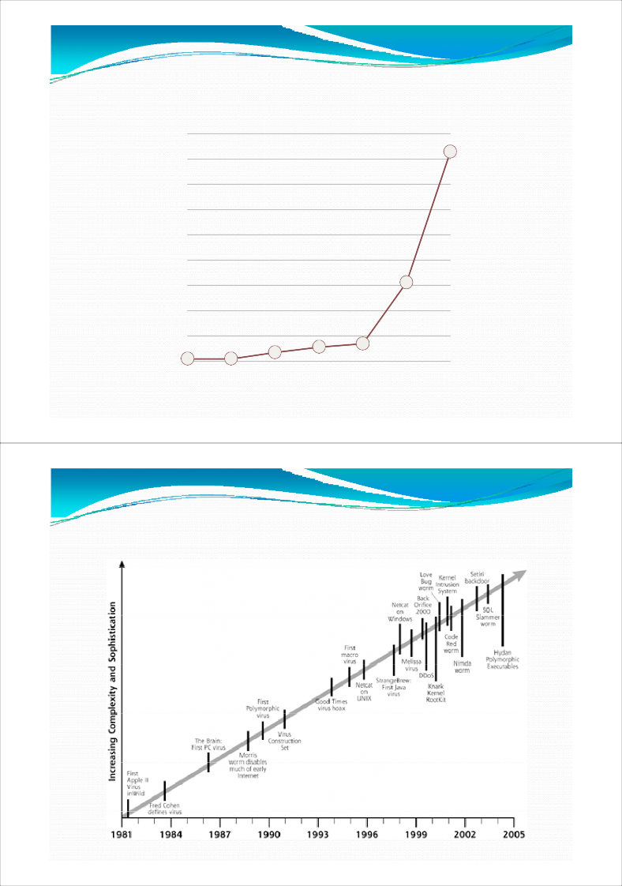
Attack Sophistication vs. Intruder Technical Knowledge
High
Auto Coordinated
Cross site scripting Tools
“stealth” / advanced scanning techniques
Intruder
packet spoofing denial of service sniffers
sweepers
Staged
distributed attack tools
www attacks
Knowledge
back doors
GUI
automated probes/scans
disabling audits
burglaries
network mgmt. diagnostics
hijacking sessions
Attack Sophistication
Low
exploiting known vulnerabilities password cracking
self-replicating code password guessing
Intruders
1980 1985 1990 1995 2004
27
Kinds of Malicious Code
Malicious code or rogue program is the general name for unanticipated or undesired effects in programs or program parts, caused by an agent intent on damage.
A virus is a program that can replicate itself and pass on malicious code to other nonmalicious programs by modifying them.
A transient virus has a life that depends on the life of its host
A resident virus locates itself in memory
28
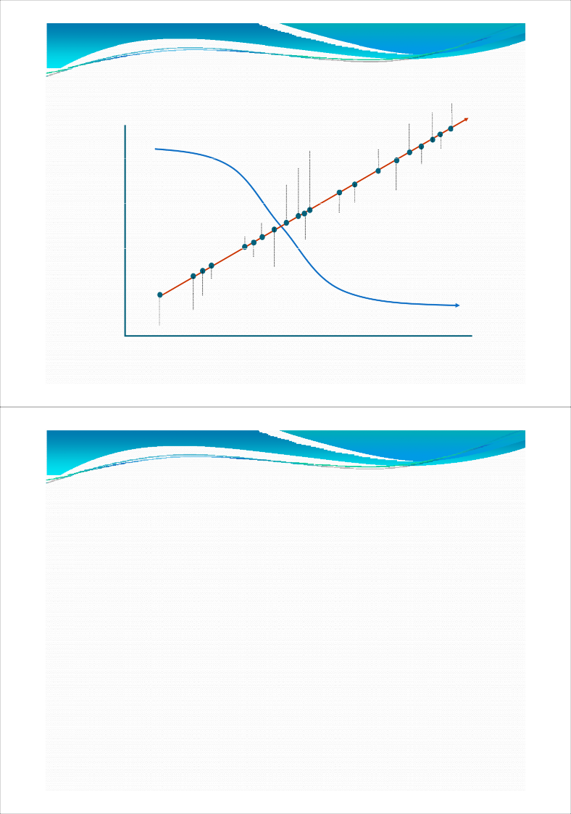
Kinds of Malicious Code (Cont’d)
A Trojan horse is malicious code that, in addition to its primary effect, has a second, nonobvious malicious effect
A logic bomb is a class of malicious code that "detonates" or goes off when a specified condition occurs.
A time bomb is a logic bomb whose trigger is a time or date.
A trapdoor or backdoor is a feature in a program by which someone can access the program other than by the obvious, direct call
29
Kinds of Malicious Code (Cont’d)
A worm is a program that spreads copies of itself through a network.
A rabbit is a virus or worm that self-replicates without bound, with the intention of exhausting some computing resource.
30

How Viruses Attach
Appended Viruses
31
How Viruses Attach (Cont’d)
Viruses That Surround a Program
32
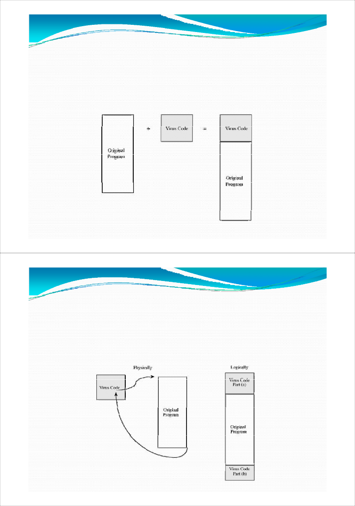
How Viruses Attach (Cont’d)
Integrated Viruses and Replacements
33
How Viruses Attach (Cont’d)
Document Viruses
Implemented within a formatted document, such as a written document, a database, a slide presentation, a picture, or a spreadsheet.
34
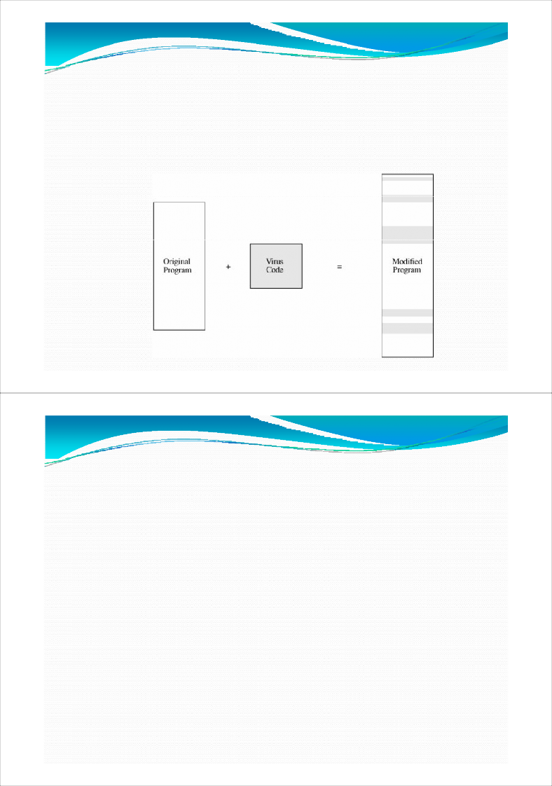
How Viruses Gain Control
35
Homes for Viruses
One-Time Execution – the majority of viruses
Boot Sector Viruses
36
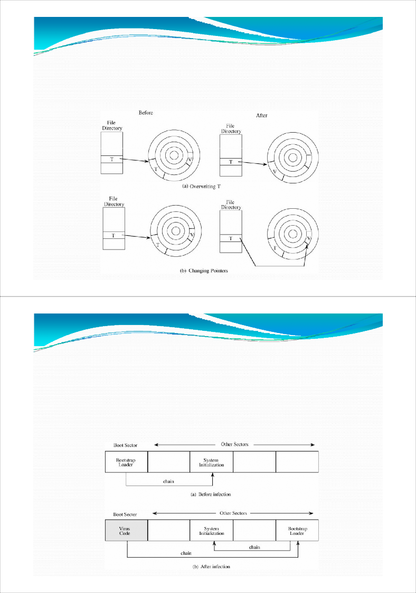
Homes for Viruses (Cont’d)
Memory-Resident Viruses
Other Homes for Viruses
Application programs
Libraries
Data files – need a startup program
37
Virus Signatures
A signature –a telltale pattern
E.g., signature for the Code Red
/default.ida?NNNNNNNNNNNNNNNNNNNNNNNNNNNNNNN NNNNNNNNNNNNNNNNNNNNNNNNNNNNNNNNNNNNNNN NNNNNNNNNNNNNNNNNNNNNNNNNNNNNNNNNNNNNNN NNNNNNNNNNNNNNNNNNNNNNNNNNNNNNNNNNNNNNN NNNNNNNNNNNNNNNNNNNNNNNNNNNNNNNNNNNNNNN %u9090%u6858%ucbd3
%u7801%u9090%u6858%ucdb3%u7801%u9090%u6858 %ucbd3%u7801%u9090
%u9090%u8190%u00c3%u0003%ub00%u531b%u53ff %u0078%u0000%u00=a HTTP/1.0
38
Virus Signatures
Storage Patterns - Most viruses attach to programs that are stored on media such as disks. The attached virus piece is invariant, so the start of the virus code becomes a detectable signature.
39
Virus Signatures
Execution Patterns - A virus writer may want a virus to do several things at the same time, namely, spread infection, avoid detection, and cause harm.
Transmission Patterns - A virus is effective only if it has some means of transmission from one location to another.
40
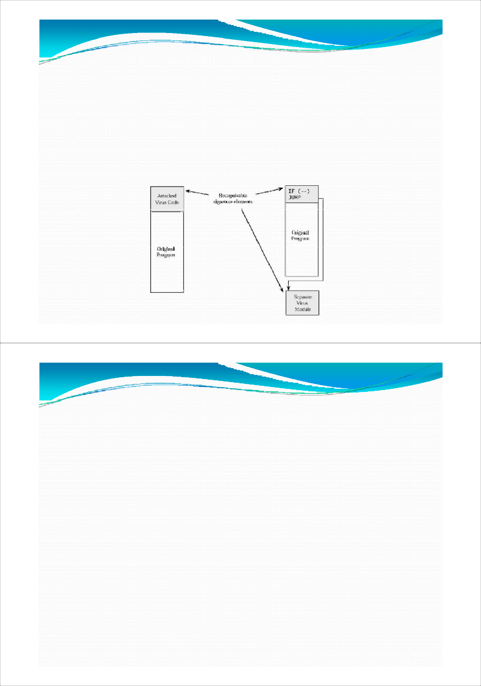
Polymorphic Viruses
A virus that can change its appearance
Encrypting viruses
Uses encryption under various keys to make the stored form of the virus different.
Contain three distinct parts:
a decryption key,
the (encrypted) object code of the virus
the (unencrypted) object code of the decryption routine.
41
Prevention of Virus Infection
The only way to prevent the infection of a virus is not to receive executable code from an infected source.
42
Prevention of Virus Infection (Cont’d)
Several techniques for building a reasonably safe community for electronic contact, including the following:
Use only commercial software acquired from reliable, well-established vendors.
Test all new software on an isolated computer.
Open attachments only when you know them to be safe
Make a recoverable system image and store it safely.
Make and retain backup copies of executable system files.
Use virus detectors (often called virus scanners) regularly and update them daily.
43
Targeted Malicious Code
Trapdoors - an undocumented entry point to a module
Examples
A system is composed of modules or components.
Programmers first test each small component of the system separate from the other components, in a step called unit testing, to ensure that the component works correctly by itself.
Then, developers test components together during integration testing, to see how they function as they send messages and data from one to the other.
44
45
Trapdoors - an undocumented entry point to a module
Examples
Hardware processor design
The undefined opcodes sometimes implement peculiar instructions, either because of an intent to test the processor design or because of an oversight by the processor designer.
Undefined opcodes are the hardware counterpart of poor error checking for software.
46
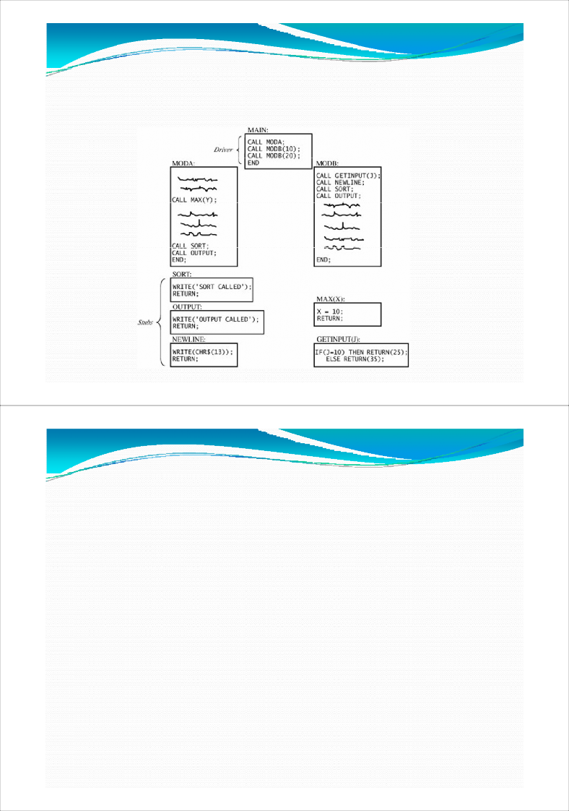
Causes of Trapdoors
forget to remove them
intentionally leave them in the program for testing
intentionally leave them in the program for maintenance of the finished program, or
intentionally leave them in the program as a covert means of access to the component after it becomes an accepted part of a production system
47
Salami Attack
merges bits of seemingly inconsequential data to yield powerful results.
Why Salami Attacks Persist
Computer computations are notoriously subject to small errors involving rounding and truncation, especially when large numbers are to be combined with small ones.
48
Privilege Escalation - a means for malicious code to be launched by a user with lower privileges but run with higher privileges.
Interface Illusions - a spoofing attack in which all or part of a web page is false.
Keystroke Logging - retains a surreptitious copy of all keys pressed.
Man-in-the-Middle Attacks - interjects itself between two other programs
49
Covert Channels: Programs That Leak Information
50
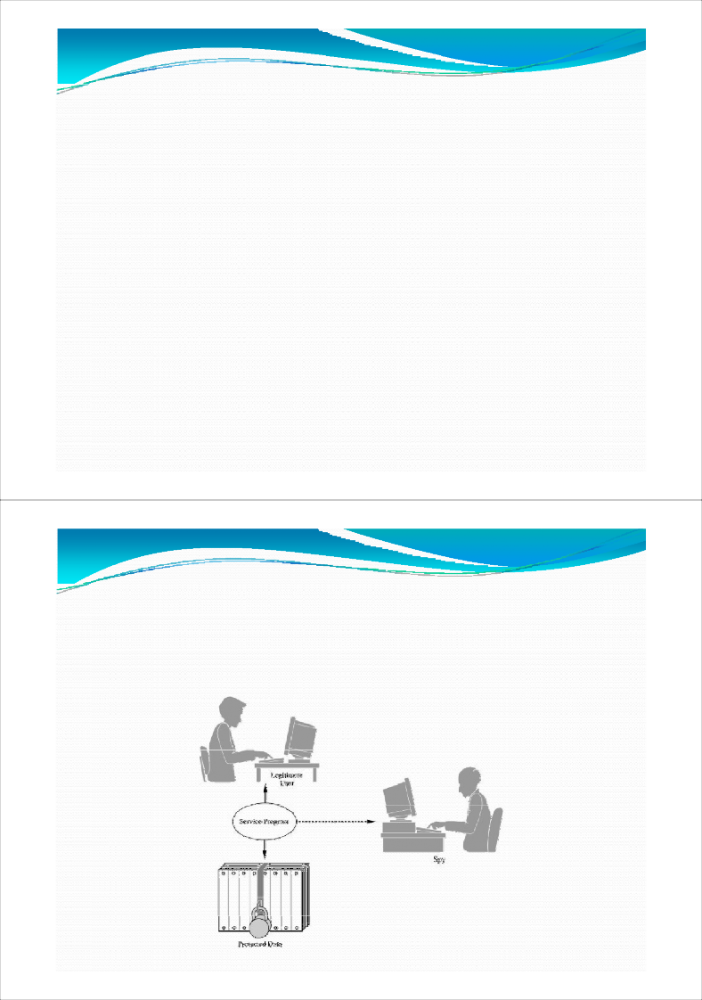
51
Storage Channels - pass information by using the presence or absence of objects in storage.
52
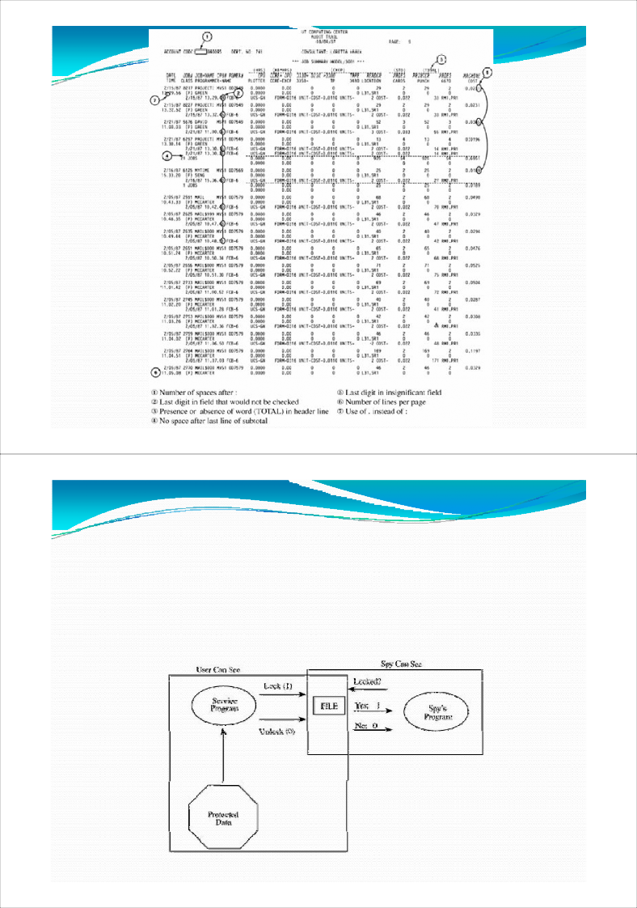
File Existence Channel Used to Signal 100
53
Controls Against Program Threats
Three types of controls:
Developmental
Operating system
Administrative
54
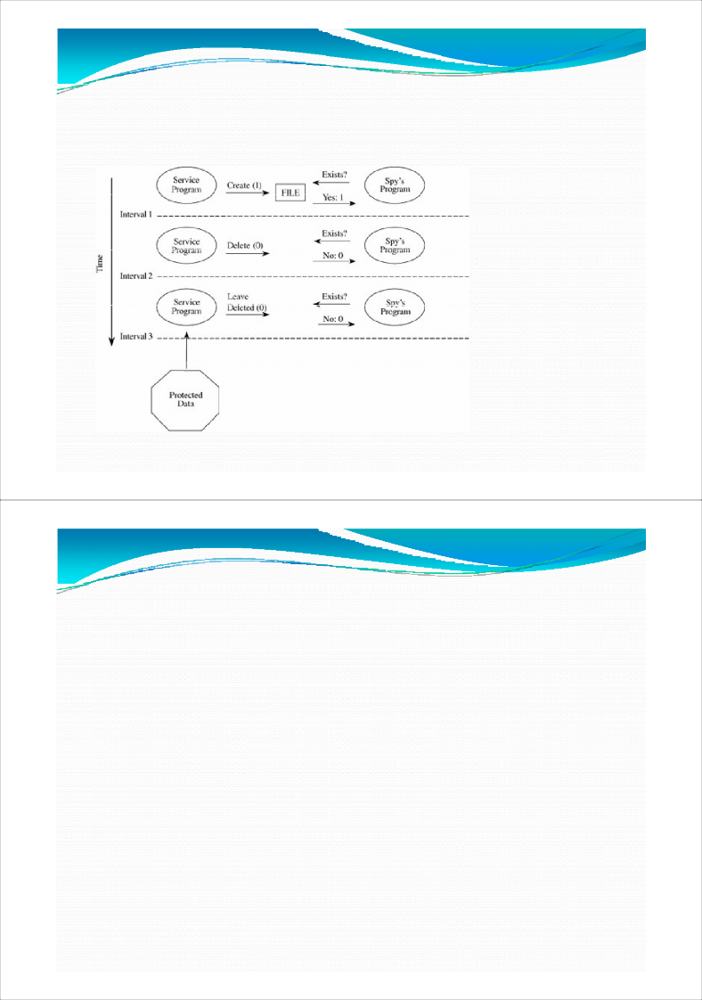
Developmental Controls
The Nature of Software Development
Collaborative effort, involving people with different skill sets who combine their expertise to produce a working product
Development requires people who can specify, design, implement, test, review, document, manage, maintain the system.
55
Developmental Controls (Cont’d)
Modularity, Encapsulation, and Information Hiding
A key principle of software engineering is to create a design or code in small, self-contained units, called components or modules
If a component is isolated from the effects of other components, then it is easier to trace a problem to the fault that caused it and to limit the damage the fault causes. This isolation is called encapsulation.
Information hiding is another characteristic of modular software.
56
Developmental Controls (Cont’d)
Modularization is the process of dividing a task into subtasks.
57
Developmental Controls (Cont’d)
Modularization
The goal is to have each component meet four conditions:
single-purpose: performs one function
small: consists of an amount of information for which a human can readily grasp both structure and content
simple: is of a low degree of complexity so that a human can readily understand the purpose and structure of the module
independent: performs a task isolated from other modules
58
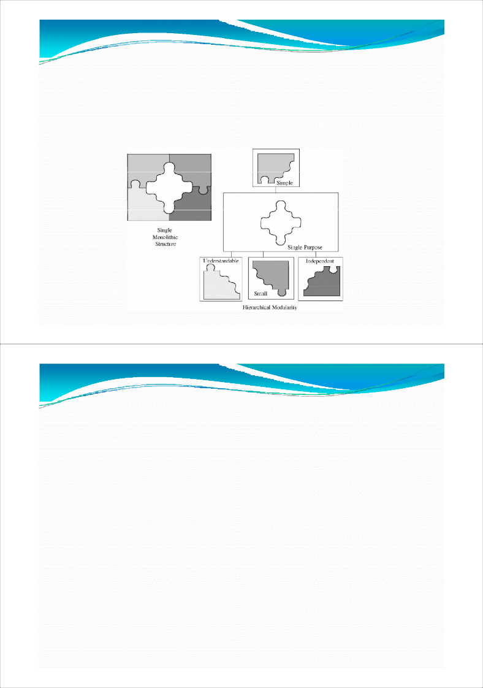
Developmental Controls (Cont’d)
Modularization
Several advantages to having small, independent components.
Maintenance. If a component implements a single function, it can be replaced easily with a revised one if necessary.
Understandability
Reuse
Correctness
Testing.
59
Developmental Controls (Cont’d)
Modularization
A modular component usually has high cohesion and low coupling
Cohesion, we mean that all the elements of a component have a logical and functional reason for being there.
Coupling refers to the degree with which a component depends on other components in the system.
60
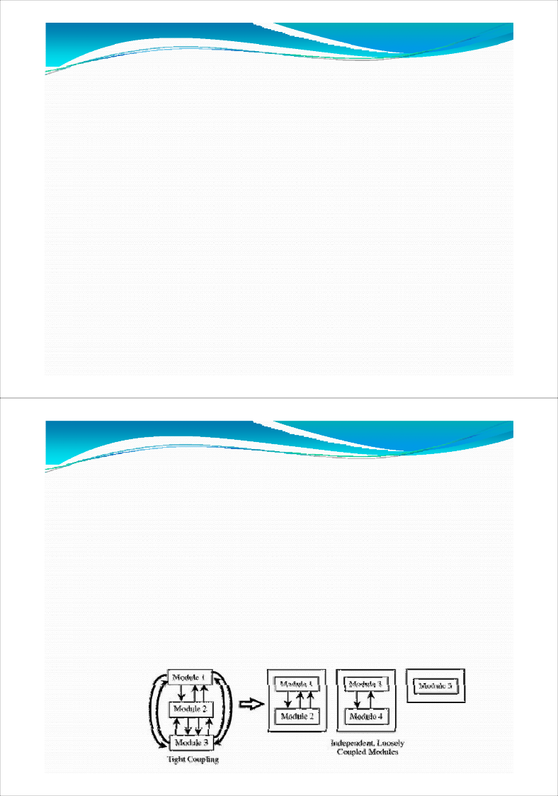
Developmental Controls (Cont’d)
Encapsulation
Encapsulation hides a component's implementation details, but it does not necessarily mean complete isolation
Berard [BER00] notes that encapsulation is the "technique for packaging the information [inside a component] in such a way as to hide what should be hidden and make visible what is intended to be visible.“
61
Developmental Controls (Cont’d)
Information Hiding
Think of a component as a kind of black box, with certain well-defined inputs and outputs and a well-defined function.
Other components' designers do not need to know how the module completes its function; it is enough to be assured that the component performs its task in some correct manner.
This concealment is the information hiding.
Information hiding is desirable because developers cannot easily and maliciously alter the components of others if they do not know how the components work.
62
Developmental Controls (Cont’d)
Information Hiding (Cont’d)
63
Developmental Controls (Cont’d)
Mutual Suspicion
Mutually suspicious programs operate as if other routines in the system were malicious or incorrect.
A calling program cannot trust its called subprocedures to be correct, and a called subprocedure cannot trust its calling program to be correct.
Each protects its interface data so that the other has only limited access.
64
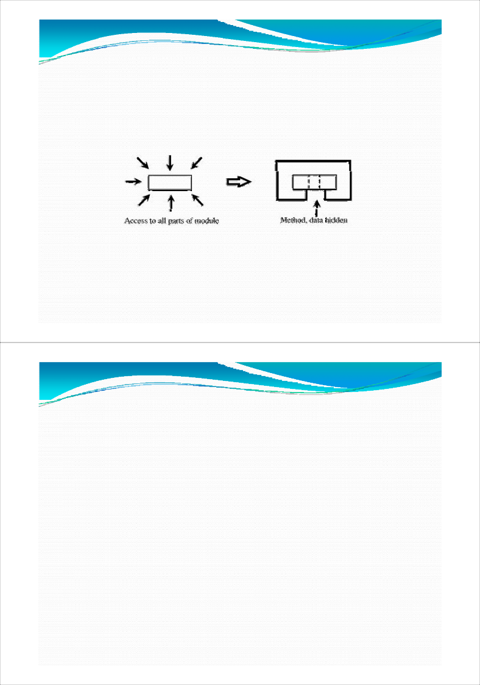
Developmental Controls (Cont’d)
Confinement
A confined program is strictly limited in what system resources it can access. If a program is not trustworthy, the data it can access are strictly limited.
Genetic Diversity
Tight integration of products is a concern.
A vulnerability in one of these can also affect the others.
Fixing a vulnerability in one can have an impact on the others.
65
Developmental Controls (Cont’d)
Pfleeger et al. [PFL01] recommend several key techniques for building what they call "solid software":
peer reviews
hazard analysis
testing
good design
prediction
static analysis
configuration management
analysis of mistakes
66
Developmental Controls (Cont’d)
Peer review
Review: The artifact is presented informally to a team of reviewers; the goal is consensus and buy-in before development proceeds further.
Walk-through: The artifact is presented to the team by its creator, who leads and controls the discussion. Here, education is the goal, and the focus is on learning about a single document.
Inspection: The artifact is checked against a prepared list of concerns. The creator does not lead the discussion, and the fault identification and correction are often controlled by statistical measurements.
67
Developmental Controls (Cont’d)
Peer review (Cont’d)
A wise engineer who finds a fault can deal with it in at least three ways:
by learning how, when, and why errors occur
by taking action to prevent mistakes
by scrutinizing products to find the instances and effects of errors that were missed
68
Developmental Controls (Cont’d)
Peer review (Cont’d)
Fault Discovery Rate Reported at Hewlett-Packard
69
Developmental Controls (Cont’d)
Peer review (Cont’d)
Discovery Activity
Faults Found (Per Thousand Lines of Code)
Requirements review
2.5
Design review
5.0
Code inspection
10.0
Integration test
3.0
Acceptance test
2.0
70
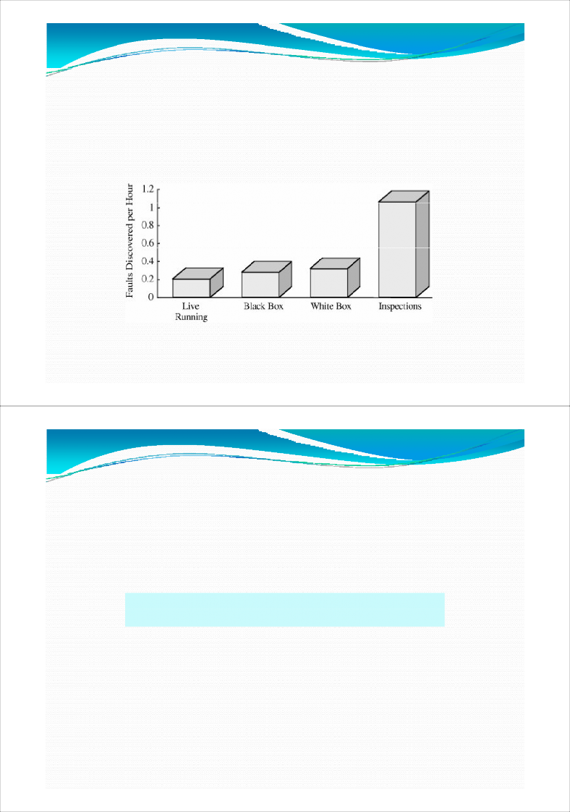
Developmental Controls (Cont’d)
Hazard analysis
A set of systematic techniques intended to expose potentially hazardous system states.
Usually involves developing hazard lists, as well as procedures for exploring "what if" scenarios to trigger consideration of nonobvious hazards.
A variety of techniques support the identification and management of potential hazards. Among the most effective are
Hazard and operability studies (HAZOP)
Failure modes and effects analysis (FMEA)
Fault tree analysis (FTA)
71
Developmental Controls (Cont’d)
Exploratory analysis, including hazard and operability
Inductive analysis, including failure modes and effects analysis studies
Unknown effect
Deductive analysis, including fault tree analysis
Description of system behavior
Known effect
Unknown Cause
Known Cause
Hazard analysis (Cont’d)
72
Developmental Controls (Cont’d)
Testing
A process activity that homes in on product quality: making the product failure free or failure tolerant.
73
Developmental Controls (Cont’d)
Testing (Cont’d)
Usually involves several stages.
Unit testing is done in a controlled environment whenever possible so that the test team can feed a predetermined set of data to the component being tested and observe what output actions and data are produced.
Integration testing is the process of verifying that the system components work together as described in the system and program design specifications.
74
Developmental Controls (Cont’d)
Testing (Cont’d)
Usually involves several stages. (Cont’d)
A function test evaluates the system to determine whether the functions described by the requirements specification are actually performed by the integrated system.
A performance test compares the system with the remainder of these software and hardware requirements.
An acceptance test, in which the system is checked against the customer's requirements description.
75
Developmental Controls (Cont’d)
Testing (Cont’d)
Usually involves several stages. (Cont’d)
A final installation test is run to make sure that the system still functions as it should.
After a change is made to enhance the system or fix a
problem, regression testing ensures that all remaining functions are still working and that performance has not been degraded by the change.
76
Developmental Controls (Cont’d)
Testing (Cont’d)
Each of the types of tests listed here can be performed from two perspectives
Black-box testing treats a system or its components as black boxes; testers cannot "see inside" the system
Clear-box testing (a.k.a. white box). - testers can examine the design and code directly, generating test cases based on the code's actual construction
77
Developmental Controls (Cont’d)
Testing (Cont’d)
Olsen [OLS93] describes the development at Contel IPC of a system containing 184,000 lines of code and tracked faults discovered during various activities, and found differences:
17.3 percent of the faults were found during inspections of the system design
19.1 percent during component design inspection
15.1 percent during code inspection
29.4 percent during integration testing
16.6 percent during system and regression testing
Only 0.1 percent of the faults were revealed after the system was placed in the field.
78
Developmental Controls (Cont’d)
Testing (Cont’d)
From a security standpoint independent testing is desirable for the testing
Penetration testing is unique to computer security – the testers try to see if the software does what it is not supposed to do, which is to fail or fail to enforce security.
79
Developmental Controls (Cont’d)
Good Design
Designers should try to anticipate faults and handle them in ways that minimize disruption and maximize safety and security.
Passive fault detection - construct the system so that it reacts in an acceptable way to a failure's occurrence.
Active fault detection - adopting a philosophy of mutual suspicion. Instead of assuming that data passed from other systems or components are correct, we always check that the data are within bounds and of the right type or format.
We can also use redundancy, comparing the results of two or more processes to see that they agree, before we use their result in a task.
80
Developmental Controls (Cont’d)
Good Design
Fault tolerance: isolating the damage caused by the fault and minimizing disruption to users.
Typically, failures include
failing to provide a service
providing the wrong service or data
corrupting data
81
Developmental Controls (Cont’d)
Good Design
We can build into the design a particular way of handling each problem
Retrying: restoring the system to its previous state and performing the service again, using a different strategy
Correcting: restoring the system to its previous state, correcting some system characteristic, and performing the service again, using the same strategy
Reporting: restoring the system to its previous state, reporting the problem to an error-handling component, and not providing the service again
82
Developmental Controls (Cont’d)
Static Analysis - examine its design and code to locate and repair security flaws before a system is up and running
several aspects of the design and code:
control flow structure - the sequence in which instructions are executed, including iterations and loops.
data flow structure - follows the trail of a data item as it is accessed and modified by the system
data structure - the way in which the data are organized, independent of the system itself.
83
Developmental Controls (Cont’d)
Configuration Management - the process by which we control changes during development and maintenance
It is important to know who is making which changes to what and when:
corrective changes: maintaining control of the system's day-to-day functions
adaptive changes: maintaining control over system modifications
perfective changes: perfecting existing acceptable functions
preventive changes: preventing system performance from degrading to unacceptable levels
84
Developmental Controls (Cont’d)
Configuration Management (Cont’d)
Four activities are involved in configuration management:
configuration identification
configuration control and change management
configuration auditing
status accounting
85
Developmental Controls (Cont’d)
Configuration Management (Cont’d)
Configuration identification
Sets up baselines to which all other code will be compared after changes are made that is building and document an inventory of all components that comprise the system.
“Freeze" the baseline and carefully control what happens to it.
When a change is proposed and made, it is described in terms of how the baseline changes.
86
Developmental Controls (Cont’d)
Configuration Management (Cont’d)
Configuration control and configuration management - ensure we can coordinate separate, related versions.
Three ways to control the changes
Separate files - have different files for each release or version.
Delta - designate a particular version as the main version of a system and then define other versions in terms of what is different.
Conditional compilation, whereby a single code component addresses all versions , relying on the compiler to determine which statements to apply to which versions.
87
Developmental Controls (Cont’d)
Configuration Management (Cont’d)
A configuration audit confirms that the baseline is complete and accurate, that changes are recorded, that recorded changes are made, and that the actual software (that is, the software as used in the field) is reflected accurately in the documents
Finally, status accounting records information about the components: where they came from (for instance, purchased, reused, or written from scratch), the current version, the change history, and pending change requests.
88
Developmental Controls (Cont’d)
Configuration Management (Cont’d)
All activities are performed by a configuration and change control board, or CCB.
The CCB contains representatives from all organizations with a vested interest in the system
The board reviews all proposed changes and approves changes based on need, design integrity, future plans for the software, cost, and more.
89
Developmental Controls (Cont’d)
Proofs of Program Correctness
Program verification can demonstrate formally the "correctness" of certain specific programs.
Making initial assertions about the inputs and then checking to see if the desired output is generated.
Each program statement is translated into a logical description about its contribution to the logical flow of the program.
Finally, the terminal statement of the program is associated with the desired output.